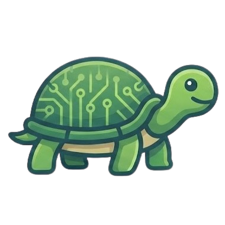

ROS WebMCP
Disconnected
MCP
WebMCP
▾
localhost:9090
local · make turtlesim
Connect
Simulators
▾
AI Chat
MCP Server
Connect
Start:
make server-http
Appearance
System
Light
Dark
AI Model
Claude Sonnet 4.6
Claude · Personal account
GitHub · GPT-4.1
GitHub · GPT-4.1 mini
GitHub · GPT-4.1 nano
GitHub · GPT-5
GitHub · GPT-5 mini
Anthropic API Key
Save
Tool calls may be less reliable than Claude.
✕
Topics
Not connected
Nodes
sys
Not connected
Services
sys
Not connected
Connect to rosbridge to get started.
Tool Log
0
Protocol
0
▼